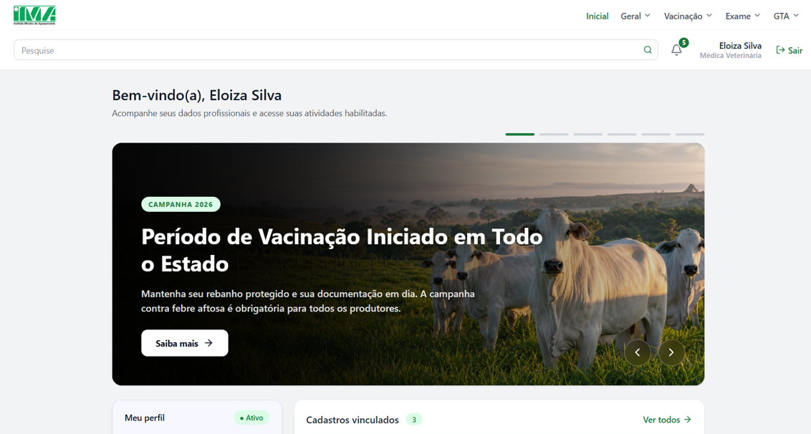

IMAGEM DO PROJETO · SIDAGRO
45+ componentes3.500+ variáveis

Cadastro Agropecuário
Visão geral
01PRODUCT DESIGN · DESIGN SYSTEM
IMA — Cadastro Agropecuário
Redesenho de um sistema governamental complexo, estruturado por um design system robusto e escalável para múltiplos perfis de usuário.
Ver case ↗